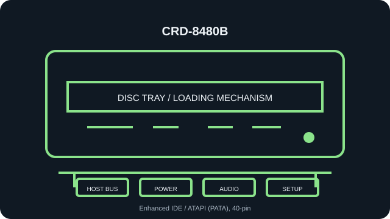

[ INDIVIDUAL COMPONENT // OPTICAL DRIVES ]
LG CRD-8480B
Read-only internal CD-ROM reader. Specifications below identify the exact model; nearby family variants may use a different interface, mechanism, firmware, or jumper layout.

IDENTIFICATION: LG CRD-8480B · verify the full label, suffix and revision against the cited manual before assigning interface, disc-format, firmware or installation characteristics.
Verified specifications
| Catalog subcategory | CD-ROM readers |
|---|---|
| Exact product identifier | LG CRD-8480B |
| Read speed | 48× maximum CD-ROM read; maximum rating is not a guarantee for a particular disc or transfer path. |
| Supported CD formats | CD-ROM Mode 1/2, CD-DA audio, CD-ROM XA, multisession Photo CD, and CD-I/FMV; read-only, not a recorder. |
| Host interface | Enhanced IDE / ATAPI (PATA), 40-pin |
| Host and mechanical compatibility | Internal half-height 5.25-inch motorized tray-loading unit; requires a PATA/ATAPI host, compatible BIOS/OS driver and standard power. Not a slimline or SATA drive. |
| Firmware / jumper caveat | Use the CD-8480B manual and unit legend for C/CS, S/SL, and M/MA Master/Slave/Cable Select positions; do not infer pin order from another LG drive. Confirm the CRD-8480B label, revision and firmware before service; do not use firmware from the CRD-8480B family’s adjacent revisions unless LG identifies it as compatible. |
Installation and preservation notes
- Before connection, compare the unit label, interface connector and jumper markings with the model-specific manual. Do not power an uncertain pinout.
- For this PATA/ATAPI unit, assign one master and one slave per IDE channel, or follow Cable Select requirements on a compatible cable.
- Keep the original firmware identity, host adapter/BIOS, driver version, disc type, read-error log and verified image checksum together during preservation work.
- Use this record for read compatibility only: a CD-ROM reader is not evidence of disc-writing support.
Manufacturer, archive and manual sources
- LG CRD-8480B Owner’s Manual (manual archive)Model-specific read formats, installation and rear-panel jumper diagram.
- LG — CRD-8480B.1WLF02 product supportManufacturer support page for the identified CRD-8480B revision.
- LG CRD-8480B manual archive listingIndependent model-specific documentation index.
Manufacturer ratings describe supported media and maximum speeds, not guaranteed read quality from a particular aged disc. Confirm the full drive suffix and revision before applying firmware or jumper guidance.